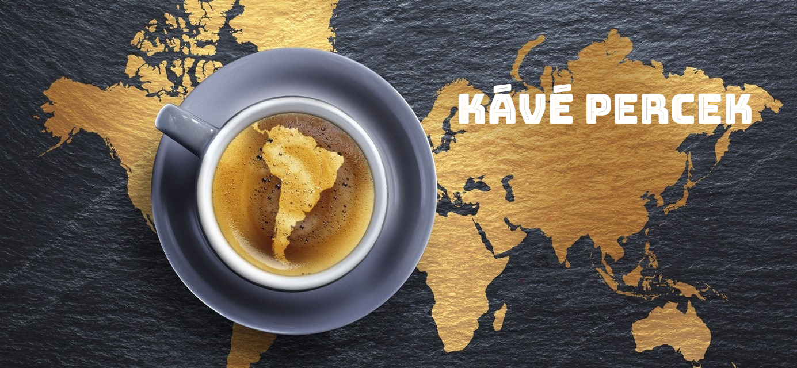

Hogy mennyire elterjedt a kávé?
Hogy mennyire elterjedt a kávé? Nagyon. Olyannyira, hogy naponta 2,2 milliárd csésze kerül
elfogyasztásra és az 52 nagy kávétermelő országban 26 millió embernek ad munkát, ehhez még hozzájönnek a
baristák, a pörkölő üzemben dolgozók, és a kereskedők a világ minden részéről.
Annak fontosságát, hogy a kávé mennyire jelentős a világgazdaság számára, nem lehet eléggé hangsúlyozni. Ez az
egyik legértékesebb termék a világkereskedelemben, csak az olaj előzi meg. A kávé elengedhetetlen része a
gazdaságnak számos fejlődő országban, valamint sok kevésbé fejlett országban a kávé exportja a deviza bevételek
több, mint 50 százalékát adja.
Elmondhatjuk, hogy a világon minden harmadik ember valamilyen kapcsolatban van a kávéval, eszi, issza, szedi,
veti, adja, vagy veszi. De sok idő és kaland után jutottunk el ide, ráadásul az utóbbi évtizedekben ezek a
számok rohamosan nőnek. De hogy honnan is indult ez az ital?